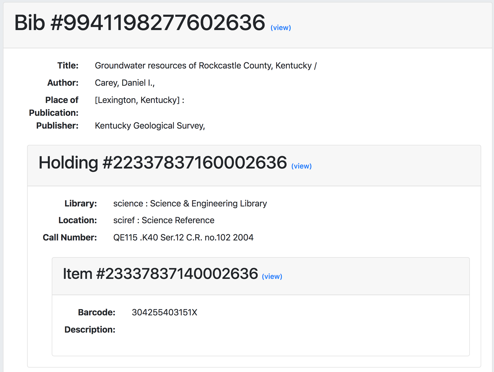

grima - whispering into alma's ear with APIs
This project is maintained by zemkat
This grima displays a MARC bibliographic record and its inventory in a tree. Each record in the tree only displays a few descriptive fields, but includes a link to view the full record.
